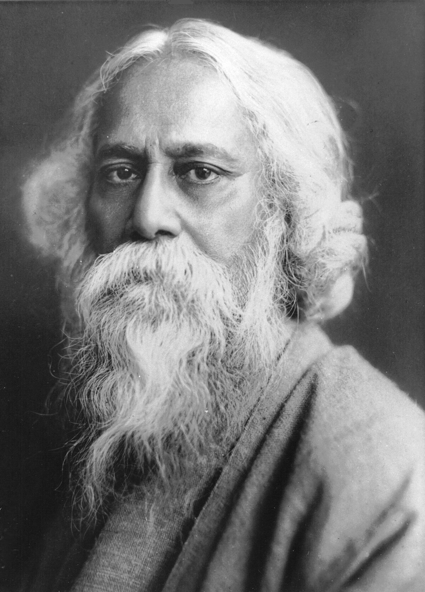
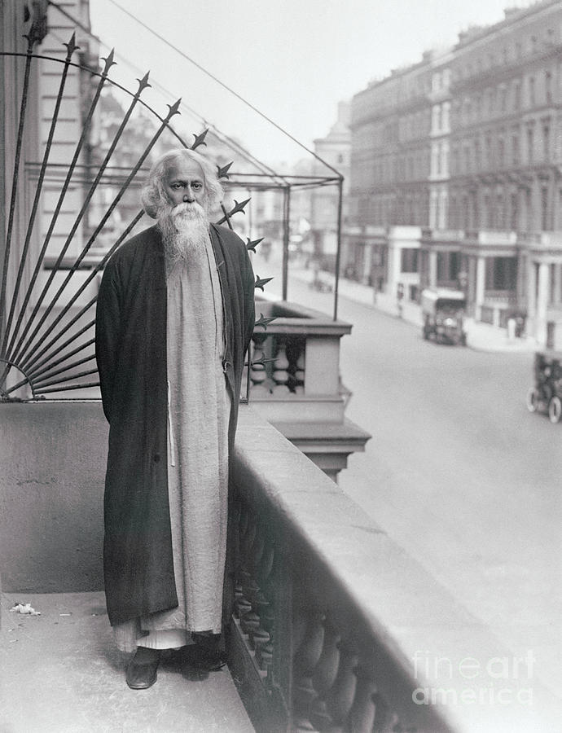

Gallery



"Where the mind is without fear and the head is held high…"
Explore the life, works, and enduring legacy of the Nobel Laureate and Bengali cultural icon.
Explore NowBorn in 1861 in Kolkata, Tagore’s eclectic education through home tutors and brief schooling shaped his boundless creativity.
Know MoreTagore’s _Gitanjali_ won him the 1913 Nobel Prize, the first for a non-European, with profound poetry, novels, and essays.
Know MoreA key figure in the Bengal Renaissance, Tagore championed art, education, and social reform, inspiring Indian independence.
Know MoreThrough Rabindra Sangeet and patriotic writings, Tagore shaped Bengali identity and cultural pride for generations.
Know More_Gitanjali_, a spiritual masterpiece, blends devotion and humanism, reflecting Tagore’s philosophical depth.
Know More_Gora_ and _The Home and the World_ explore identity, tradition, and modernity in colonial India.
Know MoreRabindra Sangeet, with over 2,000 songs, merges classical and folk, a cornerstone of Bengali culture.
Know MoreFounded in Santiniketan, Visva-Bharati reflects Tagore’s vision of holistic education, blending Eastern and Western philosophies.
Tagore’s global influence in literature, music, and education endures, celebrated annually during Rabindra Jayanti.
Discover Tagore’s works through books, music, and museums. Reach out to learn more or share your thoughts.